Plan wycieczki
Dzień pierwszy
- Aqueduto das Aguas Livres
- Guerra Jeronimo Gardens
- Bazylika Estrela
- Cementery Prazeres
Dzień drugi
- Pomnik Odkrywców
- Belem Tower
- Muzeum Archeologii i Klasztor Hieronimitów
- Ogród Botaniczny Ajuda
- Pałac Ajuda
- Muzeum Powozów
- MAAT
- Pilar 7
- Mercado da Ribeira
- Pink Street
- punkt widokowy św. Katarzyny
- Parlament
- Largo do Chiado
- Municipal Square
- Praca do Comercio
- Arco da Rua Augusta
Dzień trzeci
- Igreja de Santa Luzia
- Miraduoro das Portas do Sol
- Church of São Vicente de Fora
- Panteon Narodowy
- Museu Nacional do Azulejo
- Oceanarium
- Parque Eduardo VII
- Miradouro de São Pedro de Alcântara
- Klasztor Karmelitów
- Santa Justa
Czas wycieczki: 2,5 dnia
Skład osobowy: 2 dorosłych
Kilometry pokonane pieszo: 53 plus sporo kilometrów pokonanych komunikacją miejską
rzybliżony koszt na osobę: 900 PLN, bez kosztów wyżywienia
Jeśli planujecie intensywne zwiedzanie Lizbony, to Lisboa Card jest dobrym wyborem. Pozwala na jazdę różnymi środkami komunikacji miejskiej oraz wejście do na prawdę dużej ilości zabytków. Jeśli któregoś miejsca, jak na przykład Oceanarium, nie ma na liście darmowych wejściówek, karta pozwala kupić bilet ze zniżką. Kartę można kupić online tutaj: https://shop.visitlisboa.com i odebrać w punkcie na lotnisku, wtedy zaoszczędzimy kilka euro. Jeśli chodzi o komunikację miejską, można korzystać ze strony https://www.carris.pt/ albo z google maps (w dni powszednie rozkład zgadzał się z tym na stronie carris, w niedziele niestety nie). Trzeba tylko pamiętać o kilku rzeczach: do autobusów i tramwajów wsiadamy pierwszymi drzwiami a wysiadamy pozostałymi. Wszystkie przystanki są "na żądanie", więc jeśli nie pomachacie kierowcy wcześniej, to pomachacie mu na pożegnanie tak jak my 🙈. Oprócz bardziej popularnych w innych miejscach środków komunikacji miejskiej warto też skorzystać z wind czy kolejek, które wywiozą nas na wszystkie wzgórza, na które już nie będziecie mieć siły wchodzić na nogach.
Plan wycieczki
Trasa
Zwiedzanie
AQUEDUTO DAS AGUAS LIVRES, GUERRA JERONIMO GARDENS, BAZYLIKA ESTRELA I CEMENTERY PRAZERES
Do Lizbony dotarliśmy wczesnym popołudniem. Po odebraniu Lisboa Card i obiedzie ruszyliśmy zwiedzać. Z lotniska do centrum bezproblemowo, szybko i tanio można dotrzeć metrem, które znajdziecie zaraz obok lotniska. Jeśli przylatujecie lub wylatujecie w nocy lub wcześnie rano, niestety wtedy nie da się skorzystać z komunikacji miejskiej, która ma wtedy mocno okrojone godziny oraz trasy. My w drodze powrotnej skorzystaliśmy z Ubera. Pierwszym punktem na trasie był akwedukt, który został wpisany do księgi rekordów Guinnessa jako budowla z największym kamiennym łukiem na świecie. Niestety nie można już wejść na górę akweduktu (został on zamknięty z powodu grasującego tam niegdyś seryjnego mordercy), ale samo stanie u stóp wielkich, gotyckich łuków robi wrażenie. Akwedukt jako jedna z nielicznych budowli przetrwał trzęsienie ziemi w 1755 roku. Jeśli pojawicie się tam wcześniej niż my, możecie dodać dodatkowy punkt do planu zwiedzania: Zbiornik Wodny Mae d’Aqua. Nam niestety nie udało się wejść do środka, ponieważ dotarlibyśmy tam już po zamknięciu. Krótki spacer i jesteśmy w Guerra Jeronimo Gardens - ogrodzie w stylu angielskim. Trafiliśmy akurat na moment, w którym zaświecane były znajdujące się w nim latarnie. Dopóki się nie rozgrzeją, świecą na zielono i budują bardzo ciekawą kompozycję z otaczającą je roślinnością. Naprzeciwko wyjścia z ogrodu znajduje się Bazylika Estrela. Jest to jedna z największych sakralnych budowli w Lizbonie. Według przewodnika, w środku nieopodal przyciągającego wzrok nagrobka fundatorki można znaleźć szopkę wykonaną z korkowych i terakotowych figurek. Jest ich około 500, ale chyba ktoś ją dobrze schował, bo nie mogliśmy jej nigdzie wypatrzeć 🙈 . Jeszcze jeden krótki spacer i docieramy do cmentarza Prazeres. Jest to swoiste miasteczko umarłych: grobowce mają kształt domków oraz są ponumerowane. Sam cmentarz od początku swojego istnienia skupia groby znanych i znamienitych postaci w Portugalii. Zaraz obok cmentarza możecie złapać słynny tramwaj 28.
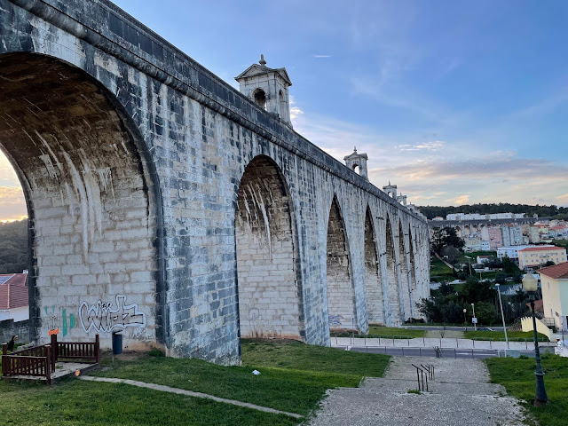


Zwiedzanie
POMNIK ODKRYWCÓW I BELEM TOWER
Sporo Lizbońskich zabytków otwiera się dopiero o 10, więc jeśli lubicie wcześnie startować ze zwiedzaniem, to musicie wziąć to pod uwagę. Drugi dzień zaczęliśmy od dzielnicy Belem. Na pierwszy ogień wzięliśmy pomnik Odkrywców. Możecie na nim zobaczyć całą śmietankę bohaterów z epoki wielkich odkrywców. Na ich czele stoi słynny Henryk Żeglarz a w sumie znajdziecie tam 33 figury, stojące na gotowym do wypłynięcia statku. Można również wyjechać na szczyt pomnika, skąd po za piękną panoramą można też podziwiać podarunek od RPA - wielką różę wiatrów, na której zaznaczono portugalskie podboje. W niedalekiej odległości znajdziecie wieżę Belem, która w ciągu swojego istnienia była więzieniem, placówką celną, latarnią morską, placówką telegrafu a także pełniła funkcje obronne. Wieża ma pięć, w większości pustych poziomów, do których prowadzą wąskie i kręte schody. Zabytek ten wpisany jest na listę UNESCO. Nie zapomnijcie zwiedzić najniższego poziomu - można tam zobaczyć otwory w podłodze, w których umieszczani byli więźniowie. Ale nie była to zwykła "dziura w ziemi". W czasie przypływów wypełniała się wodą. Jeśli korzystacie z Lisboa Card, musicie podejść do znajdującej się niedaleko budki z biletami i pobrać darmową wejściówkę.
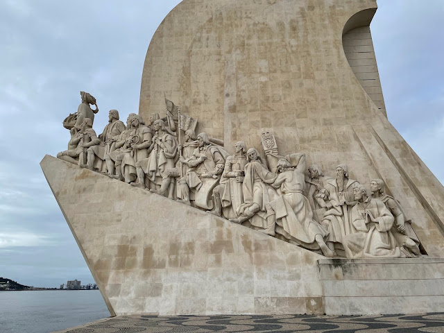
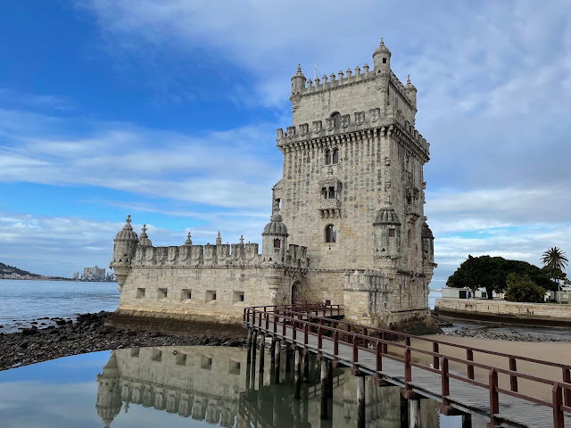
Zwiedzanie
MUZEUM ARCHEOLOGII I KLASZTOR HIERONIMITÓW
Zmierzając do klasztoru zatrzymaliśmy się w miejscu, które jak nam się wydawało, jest wejściem do tego zabytku (opisy w atrakcjach turystycznych pozostawiają trochę do życzenia). Okazało się, że to wejście do muzeum Archeologii. Skoro i tak już tam byliśmy i lizbońska karta pozwalała na darmowe wejście, to postanowiliśmy skorzystać. W środku można zobaczyć stałą wystawę opowiadającym o starożytnym Egipcie, obejrzeć sarkofagi a także zobaczyć skarby portugalskiej archeologii. Po wyjściu z muzeum trafiliśmy już bez pomyłek do klasztoru. Zrobił na nas na prawdę duże wrażenie. Sam budynek z zewnątrz jest ogromny, po wejściu do środka nie czuliśmy się jednak przytłoczeni, jak w niektórych innych budowlach sakralnych. Misternie wykonane krużganki, które są pięknym przykładem kunsztu mistrzów kamieniarstwa, wyglądają pięknie. Dopisała nam pogoda, więc delikatne promienie słońca dodatkowo podkreślały wszystkie rzeźby i dekory. Gdyby nie długa lista rzeczy, które chcieliśmy jeszcze zobaczyć tego dnia, z pewnością spędzilibyśmy tam więcej czasu. Klasztor, tak jak akwedukt który widzieliśmy pierwszego dnia, na szczęście przetrwał trzęsienie ziemi. Możecie tutaj zobaczyć również grobowiec Vasco da Gamy oraz innych wybitnych portugalskich postaci. Przed dalszą trasą zatrzymaliśmy się jeszcze, żeby spróbować lokalnego przysmaku, wywodzącego się właśnie z dzielnicy Belem: pasteis de nata. Jeśli macie czas, możecie ustawić się w kolejce do https://pasteisdebelem.pt/en/.
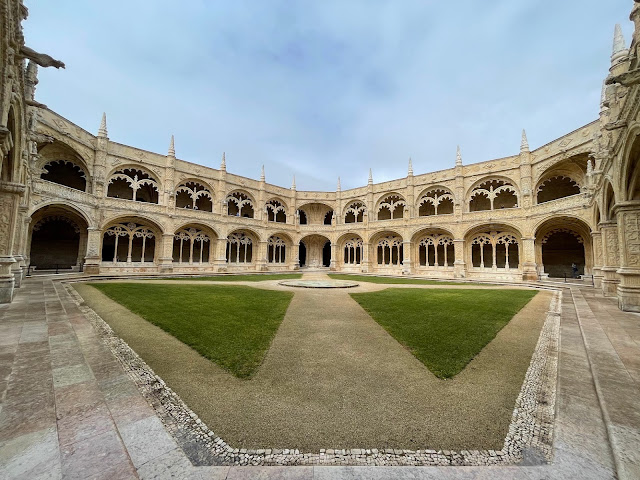
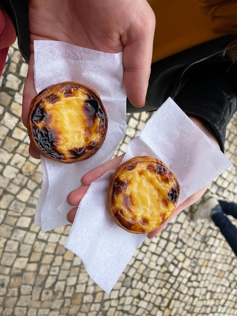
Zwiedzanie
OGRÓD BOTANICZNY I PAŁAC AJUDA
Jardim Botânico d’Ajuda jest jednym z najstarszych ogrodów botanicznych w Portugalii. Został założony na życzenie króla w miejscu, gdzie rodzina królewska pomieszkiwała w namiotach. Z powodu przeżytego trzęsienia ziemi król Józef I odmawiał zamieszkania w budynkach wybudowanych z cegieł. W ogrodzie oprócz kolekcji różnego rodzaju roślin, spotkaliśmy całe stado pawi. Zarówno tych kolorowych jak i albinosów. Ukryły się za budynkiem, w którym znajduje się toaleta i mieliśmy trochę szczęścia, że udało nam się je wypatrzeć. W ogrodzie panuje spokój, słychać śpiew ptaków i można także natknąć się na papugi. To idealne miejsce, żeby chwilę odpocząć zwłaszcza, jeśli ktoś wspiął się na to wzgórze na własnych nogach. Niedaleko, po drugiej stronie ulicy wznosi się Pałac Narodowy Ajuda. W tym miejscu pierwotnie stała inna rezydencja rodziny królewskiej, ale została zniszczona przez pożar. W przeciągu 20 lat powstał pałac, który możemy zwiedzać dzisiaj. W środku znajdziemy urządzone z przepychem sale i pokoje, urozmaicone pod względem kolorystyki i stylu oraz bardzo dużo przedmiotów codziennego użytku.
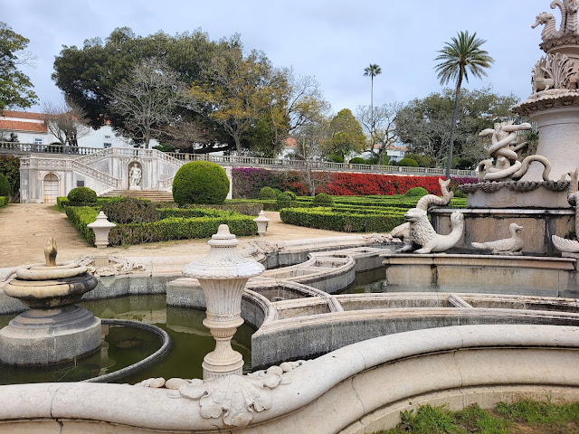
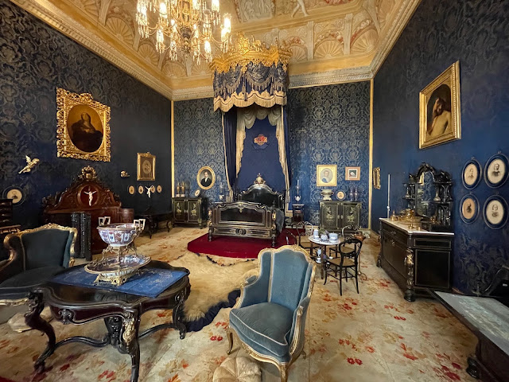
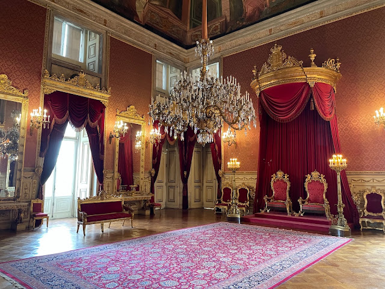
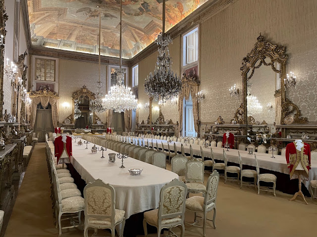
Zwiedzanie
MUZEUM POWOZÓW, MAAT I PILAR 7/h2>
Wracając nad Tag zatrzymaliśmy się w Narodowym Muzeum Powozów. Muzeum jest dość surowe i proste, ale dzięki temu nie odciąga uwagi od różnorodności zebranych w nim powozów. Można tutaj zobaczyć ociekające złotem i zdobieniami królewskie karocę, małe powozy używane przez dzieci, dyliżanse pocztowe a także powóz, którym przewożeni byli więźniowie (ma domalowane atrapy okien). Dodatkowo znajdują się tutaj stroje tak dla powożących jak i dla koni oraz kompletny powóz wraz z figurami koni, który pokazuje, jak to wszystko było ze sobą połączone. Kładką przechodzimy na drugą stronę ulicy i jesteśmy w drugim najlepszym według nas miejscu w Lizbonie: dawnej elektrowni Central Tejo. To jedno z niewielu miejsc, gdzie można dotknąć całej maszynerii, przejść przez poziomy elektrowni a nawet przez środek pieca! Znajdziecie tutaj bardzo dużą dawkę wiedzy i historii podanej w niezwykle przystępny sposób. W środku czekają na Was również interaktywne niespodzianki (prawie dostałam zawału, kiedy po wejściu do pieca ten uruchomił głośną machinę 🙈). Po za wyposażeniem elektrowni można również doświadczyć na własnej skórze różnych zagadnień związanych z elektrycznością, bo muzeum przygotowało również cały szereg ciekawych doświadczeń (nie tylko dla dzieci, a przynajmniej nikt nam nie powiedział, że to może być tylko dla dzieci 😁). Po wyjściu, małych perypetiach z pociągiem i biegu w deszczu trafiamy do Pilar 7. Jest to punkt widokowy na moście 25 kwietnia połączony z historią powstania mostu. Po za kulminacyjnym punktem tego miejsca, którym jest wyjechanie windą do poziomu jezdni, można obejrzeć makietę mostu a także zobaczyć, jak wygląda mocowanie stalowych lin wewnątrz filarów. Na szczycie możemy spędzić 10 minut a w tym czasie warto spojrzeć z bliska na konstrukcje mostu a także stanąć na częściowo przeszklonej podłodze, która znajduje się 80 metrów nad powierzchnią wody.
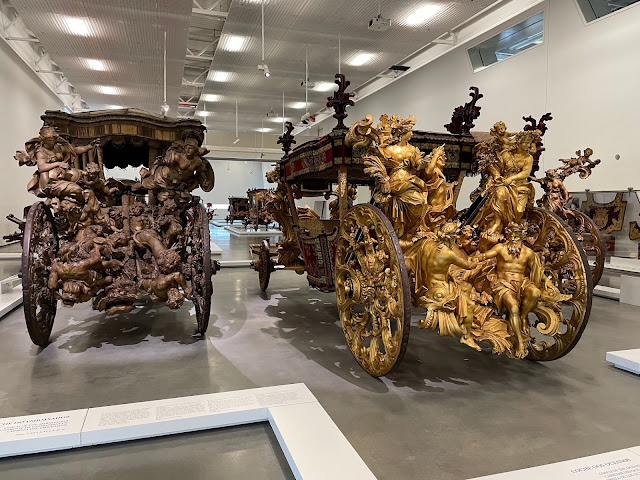
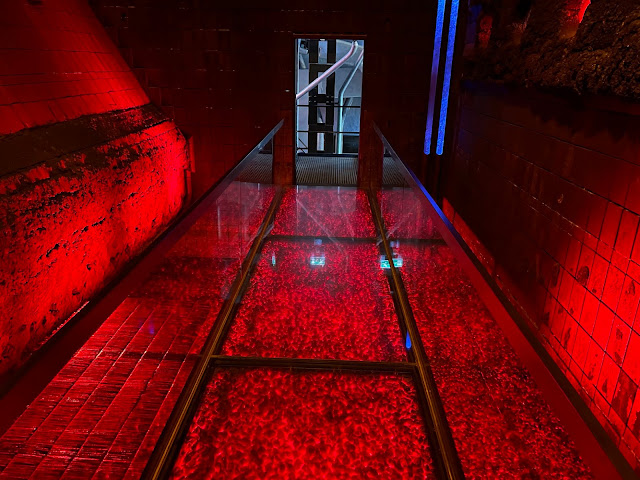
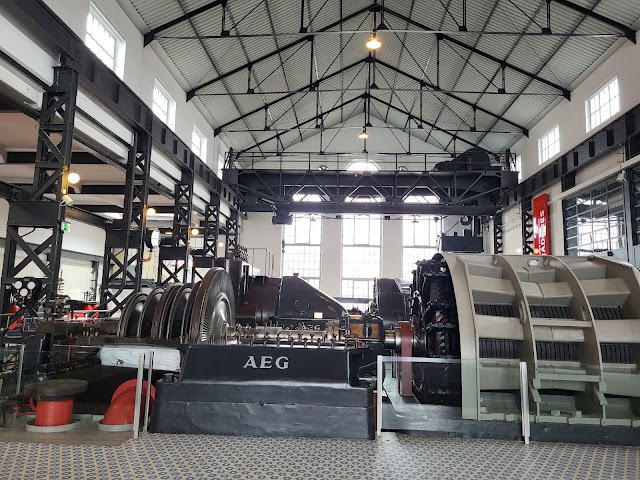
Zwiedzanie
MERCADO DA RIBEIRA, PINK STREET I PUNKT WIDOKOWY ŚW. KATARZYNY
WPo obiedzie planowaliśmy zobaczyć targ Mercado da Ribeira, ale jeśli chcecie poczuć klimat tego miejsca, najlepiej przyjechać tutaj rano. Po obiedzie można zobaczyć jedynie pustą halę targową oraz ozdobioną płytkami azulejos galerię na pierwszym piętrze. Idąc dalej przechodzimy przez Pink Street, czyli nic innego jak ulicę pomalowaną na różowy kolor (kolejnego dnia natknęliśmy się na pomalowaną na niebiesko). A potem wędrując wąskimi uliczkami i chłonąc klimat Lizbony, poszliśmy w kierunku punktu widokowego św. Katarzyny. Można do niego wyjechać kolejką linowo-terenową, która niestety była nieczynna. Po krótkiej wspinaczce jesteśmy na miejscu. Można tutaj odpocząć i nacieszyć oczy panoramą Tagu, widać stąd też pomnik Chrystusa Króla, który znajduje się na drugim brzegu rzeki oraz most 25 kwietnia.


Zwiedzanie
BAZYLIKA ŚW. CECYLII, PIAZZA SANTA MARIA IN TRASTEVERE, PONTE SISTO I JANIKULUM
Na Zatybrze dotarliśmy już po zmierzchu, dzięki czemu przechodząc uliczkami zapełnionymi stolikami i światłami mogliśmy poczuć klimat nocnego życia. Pierwszy punkt tutaj to bazylika św. Cecylii - patronki muzyki kościelnej. Świątynia została wybudowana w miejscu, znaleziono grób wspomnianej świętej. Mieliśmy szczęście i trafiliśmy tutaj na występ chóru. Następnie dotarliśmy na piazza Santa Maria in Trastevere. Nad placem góruje świątynia, w której można zobaczyć złocone mozaiki oraz narzędzia, które podobno były używane w celu torturowania pierwszych chrześcijan (obeszliśmy kościół trzy razy, zanim je zauważyliśmy ;)). W centrum placu znajduje się fontanna uważana za najstarszą w całym Rzymie. Idąc dalej dochodzimy do Ponte Sisto czyli mostu Sykstusa. Powstał w XV wieku na życzenie papieża Sykstusa i do dzisiaj jest jednym z głównych szlaków prowadzących na Zatybrze. Muszę przyznać, że po tak aktywnym dniu nie do końca dobrze przemyśleliśmy sobie ostatnie miejsce, które chcieliśmy zobaczyć - wzgórze Janikulum. Ale czego się nie robi dla najsłynniejszego tarasu widokowego w Rzymie? Kiedy w końcu usiedliśmy na murku, z którego rozciągał się widok na nocne miasto, stwierdziliśmy jednogłośnie, że było warto. I że w końcu możemy wybrać się na wyczekaną pizzę :)


Zwiedzanie
BAZYLIKA ŚW. PIOTRA, ZAMEK I MOST ŚW. ANIOŁA
Przed zwiedzaniem bazyliki planowaliśmy odwiedzić Muzea Watykańskie, ale dopiero w sobotę wieczorem sprawdziliśmy, że godziny otwarcia się zmieniły i w każdą niedzielę muzea są zamknięte. W związku z tym z samego rana poszliśmy prosto do świątyni, dzięki czemu uniknęliśmy tłumów. Od samego wejścia uderza ogrom tego miejsca - może ono pomieścić 54 tysiące wiernych. W środku znajduje się taka ilość rzeźb, dekoracji i malunków, że tak naprawdę nie wiadomo w którą stronę najpierw spojrzeć. Całość ocieka wielkością i przepychem. Warto wyjść na kopułę, z której można zobaczyć zarówno wnętrze bazyliki jak i panoramę Rzymu. Po zejściu na dół poszliśmy w kierunku zamku św. Anioła. Budynek ten pełnił różne funkcje: początkowo było tu mauzoleum cesarza Hadriana, schronieniem dla papieży a także więzieniem. Naprzeciwko głównego wejścia znajduje się most wybudowany z marmuru w II w. Jedną z historycznych ciekawostek jest fakt, że właśnie na tym moście w XIX wieku napadnięto na orszak pogrzebowy Piusa IX z zamiarem wyrzucenia jego ciała do Tybru. Most ozdabiają figury 10 aniołów, Piotra i Pawła a także Adama, Noego, Abrahama i Mojżesza.


Zwiedzanie
ARA PACIS, BAZYLIKA ŚW. AMBROŻEGO I KAROLA, PIAZZA DI SPAGNA I KOŚCIÓŁ NAJŚWIĘTSZEJ TRÓJCY
Po drugiej stronie Tybru znajduje się Ara Pacis czyli mauzoleum Augusta. Pochodzi z I w. p.n.e. i po przeniesieniu go z Via Flamina został odbudowany prawie całkowicie z oryginalnych części. Kolejny z zaplanowanych punktów to bazylika św. Ambrożego i Karola. Niestety świątynia była zamknięta, a szkoda, bo przewodniki polecają zajrzeć do środka, ponieważ w latach 1987-2004 przeprowadzona została gruntowna renowacja i wszystkie zdobienia w środku otrzymały nowe, świeże kolory. Idąc dalej doszliśmy do piazza di Spagna, na której znajduje się piękna fontanna w kształcie łodzi oraz oczywiście słynne Hiszpańskie Schody. Po pokonaniu 137 schodów można zajrzeć do kościoła Najświętszej Trójcy z 1527 roku.

Zwiedzanie
PIAZZA DI POPOLO I 3 KOŚCIOŁY
Po dotarciu na piazza di Popolo uwagę przyciągają dwa bliźniacze kościoły: Artystów i NMP od Cudów. W pierwszym często odbywają się pogrzeby gwiazd a także przedstawienia i koncerty. Drugi miał być identyczny, ale na drodze ku realizacji tego planu stanął brak miejsca, w związku z czym projekt musiał zostać zmniejszony. Po drugiej stronie placu znajduje się kościół Santa Maria del Popolo, który był zamknięty. W środku można zobaczyć dzieła Rafaela i Caravaggio. Z samym placem, który jest częstym miejscem wieców politycznych czy parad włoskich piłkarzy po zwycięskich mistrzostawach, krył w swojej okolicy grób Nerona. Z powodu złych mocy nawiedzających mieszkańców został zburzony a papież Paschalis II nakazał w tym miejscu budowę kaplicy. Jak głosi legenda, w momencie rozpoczęcia prac złe duchy opuściły to miejsce i mieszkańcy mogli spać spokojnie. Na środku placu znajduje się egipski obelisk z XIII w. p.n.e., który został wzniesiony za panowania Ramzesa II.


Zwiedzanie
TERRAZZA DEL PINCIO, OROLOGIO AD AQUA I PIAZZA BARBERINI
Nad placem góruje taras widokowy na wzgórzu Pincio. Na polecenie Napoleona w tym miejscu został utworzony pierwszy rzymski publiczny ogród. W upalne dni musi być wspaniale odpocząć tutaj w cieniu drzew. Cały park zajmuje 85 ha i gdyby pogoda nam na to pozwoliła, spędzilibyśmy tam zdecydowanie więcej czasu. Obejrzeliśmy tam pałacyk Valadiera,w którym aktualnie działa ekskluzywna restauracja, następnie zobaczylismy obelisk zbudowany na część kochanka cesarza Hadriana - Antinousa, który utonął w Nilu. Na końcu zatrzymaliśmy się przy zegarze wodnym, którego dekoracja przywodzi na myśl zapomniane leśne zakątki. Cały mechanizm wprowadzany jest w ruch za pomocą wody, która przelewa się pomiędzy dwoma pojemnikami.


Zwiedzanie
FONTANNA MOJŻESZA, KOŚCIÓŁ NMP OD ANIOŁÓW, TERMY DIOKLECJANA I PIAZZA DELLA REPUBBLICA
Nadszedł czas na kolejne rzymskie wzgórze - Kwirynał. Najpierw zatrzymujemy się obok fontanny Mojżesza, która nie spodobała się rzymianom i przez długi czas była obiektem drwin. Naszym zdaniem, Mojżesz tutaj ma w sobie jakiegoś nordyckiego ducha ;). Idąc dalej docieramy do term Dioklecjana, czyli kompleksu publicznych łaźni, który był uznawany za największy w antycznym Rzymie. Były czynne aż do 573 r, kiedy Goci odcięli akwedukty które doprowadzały do nich wodę. W antyczne termy doskonale wkomponowany jest kościól NMP od Aniołów - ostatni rzymski projekt Michała Anioła. Wnętrze wypełnione jest pięknymi malowidłami, w tym zodiakalnych konstelacji i zmieniającego się położenia Gwiazdy Polarnej. Ostatnim punktem tutaj jest piazza della Repubblica, na środku którego znajduje się fontanna Najad. Wyzywające pozy nimf wzbudziły sporo kontrowersji w czasie jej otwarcia. Dodatkowego uroku dodają dwa gmachy z podcieniami, wybudowane na dwóch bocznych skrzydłach placu.


Zwiedzanie
BAZYLIKA MATKI BOSKIEJ WIĘKSZEJ, OBELISK LATERAŃSKI I BAZYLIKA ŚW. JANA NA LATERANIE
Po trochę dłuższym spacerze docieramy do bazyliki Matki Boskiej Większej, czyli największej rzymskiej świątyni związanej z kultem maryjnym. Jest naprawdę duża i jeśli spojrzycie w górę, zobaczycie rzeźbiony, pozłacany strop wykonany z kasetonów. Dodatkowo w świątyni można znaleźć kaplicę Sykstyńską - nie tą najsłynniejszą, ale również wartą uwagi. Kontynuując dłuższy spacer dochodzimy do obelisku Laterańskiego - największego stojącego egipskiego obelisku na świecie a następnie do bazyliki św. Jana na Lateranie. Wygląda ona trochę jak mini wersja bazyliki św. Piotra z Watykanu a w środku znajduje się między innymi fragment stołu, przy którym podobno została spożyta ostatnia wieczerza. Nieopodal, po drugiej stronie ulicy można obejrzeć Święte Schody, czyli te, które wiodły do pałacu Poncjusza Piłata.


Zwiedzanie
FONTANNA DI TREVI I PIAZZA COLONNA
Do fontanny di Trevi wróciliśmy metrem i już z daleka było wiadomo, że zbliżamy się do celu. Tłum ludzi oblegających fontannę był naprawdę spory, pomimo nie najlepszej pogody. Fontanna ma 20m szerokości i 26m wysokości. W centrum widać pomnik neptuna, który powozi rydwanem zaprzęgniętym w trytony. Towarzyszą mu posągi, które przedstawiają Zdrowie oraz Obfitość. I w końcu ostatni punkt, jaki udało nam się zobaczyć podczas naszego dwudniowego zwiedzania Rzymu: piazza Colonna. W centrum placu stoi kolumna Marka Aureliusza, ale na jej szczycie nie ma już jego posągu. Na polecenie papieża Sykstusa V został zamieniony na figurę św. Pawła. To były intensywne dwa dni, ponieważ postanowiliśmy wykorzystać na maxa fakt, że udało nam się tym razem wyjechać bez dzieciaków.